본문바로가기
로그인
|
구독신청
|
신문보기
|
보이스뉴스
ENG
中文
日文
|
채널A
|
스포츠동아
|
더보기
전체메뉴보기
오피니언
정치
경제
국제
사회
문화
연예
스포츠
매거진
#2020 도쿄올림픽
#김경수 징역 2년
#코로나 4차 유행
검색
Trend news
1
[김순덕의 도발]김경수는 왜 “문 대통령을 지켜달라”고 했을까
2
“오신지 몰랐는데…” 윤석열-추미애, 금산사서 어색한 재회
3
[단독]SLBM 탑재될 첫 3000t급 잠수함 취역 또 연기
4
[속보]男 양궁도 해냈다, 단체전 금메달…2연패 달성
5
“엄마가 장관이면 이랬을까”…열사병 순직병사 어머니 절규
6
MBC 박성제 사장 “올림픽 정신 훼손한 방송, 사죄드린다”
2021.07.26(월)
강릉
32℃
2021.07.26(월)
광주
32℃
2021.07.26(월)
대구
33℃
2021.07.26(월)
대전
33℃
2021.07.26(월)
부산
30℃
2021.07.26(월)
서울
35℃
2021.07.26(월)
울산
29℃
2021.07.26(월)
인천
33℃
2021.07.26(월)
전주
33℃
2021.07.26(월)
제주
29℃
2021.07.26(월)
춘천
34℃
2021.07.26(월)
충주
33℃
닫기
실시간 뉴스
오피니언
사설
동아광장
오늘과 내일
시론
횡설수설
광화문에서
@뉴스룸
기자의 눈
이슈&트렌트
정치
청와대
국회정당
북한
외교안보
행정자치
여론조사
경제
기업CEO
부동산
금융
IT
자동차
유통
정책/칼럼
Job
국제
아시아
미국/북미
유럽
중국
일본
중동
중남미
러시아
사회
교육
노동
사건사고
법조
환경
보건복지
날씨
교통
내고장소식
인사동정
인사
부고
사고
본사손님
생활 문화
문학
건강
요리
패션
여행
음악
만화
공연
종교
학술
연예
방송
영화
대중음악
스포츠
야구&MLB
축구
골프
농구
마라톤
종합
실시간 이슈
이슈
연재
트렌드뉴스
많이 본 뉴스
댓글이 핫 한 뉴스
베스트 추천 뉴스
신문보기
일일 외국어 산책
오늘의 운세
ENG
中文
日文
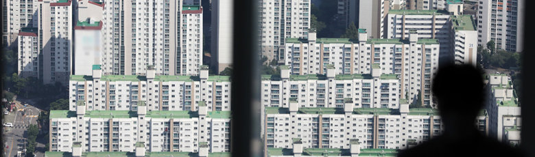
2030 직장인, 휴가내 집보러 다녀도…‘매물 없음’
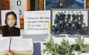
‘女중사 사망사건’ 2차 가해
공군 부사관 수감 중 사망
성추행 피해 女중사 사망 사건 최종수사결과 내달 발표
코로나19 신규 확진 1318명…
일요일 기준 역대 최다
‘댓글 조작’ 김경수,
오늘 오후 창원교도소 재수감
김어준, 김경수 재판부에 “개놈××들” 원색 비난 논란
단독
해군본부, “최단시간내 항원키트 적재”
지시하고도 안실어
박제균 칼럼
생계형 좌파 이익공동체를 사수하라
윤석열, 김종인계 영입…
尹만난 이준석 “불확실성 절반 제거”
윤석열-안철수 “드루킹 댓글조작 몸통 수사해야”
공정한 경쟁이 낳은 女양궁 9연패
‘선발전 2500발’ 오직 실력만 보고 뽑은
양궁 국대, 33년 세계최강
다 바꾼 김학범호, 탈락 위기서
8강행 가장 유리한 고지로
17세 김제덕, 한국양궁 MZ세대…
쉼없이 “파이팅” 선배에 조언도
‘18세 박태환’ 황선우,
11년 만에 박태환 넘다
해외 언론도 “MBC 올림픽 중계
모욕적” 비판…野 “외교결례”
“아프리카의 죽은 심장”… MBC, 베이징때도 ‘국가 비하’ 자막
올림픽 개회식 저질 방송으로 나라 망신 시킨 MBC
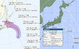
“대형 태풍 27일 도쿄 관통”
엎친데 덮친 올림픽
日 폭풍우 동반한 ‘8호 태풍’…韓 양궁·축구전 있는 28일까지 지속
전국 대부분 지역 폭염특보…
낮 최고 기온 37도
“195만원 날치기 당했다”
허위 신고한 20대 검거
이재명 “백제 주체돼 통합한 적 없어”
與野주자 “지역주의 조장”
이낙연 “이재명 ‘백제 발언’ 비판 상식적…사람들이 바보인가”
단독
‘델타변이’ 우세종 됐다…
확진자 48%서 검출
非수도권 식당 밤 10시까지만… 공원-해수욕장 야간음주 금지
美, 5개월만에 다시 하루 확진 10만명
“살을 에는 추위보다 힘들어”
폭염과 싸우는 코로나 전사들
단독
판사 임용 방식 놓고…
대법 “민변, 팩트 틀렸다” 반격
이진구 기자의 對話
유현준 “청년들 월세 소작농 만드는
청년임대주택 보면… 화가 나”
55~59세 오늘부터 백신 접종
수도권 모더나 →화이자 변경
與 1,2위 주자 부인
‘내조 경쟁’도 불붙었다
‘日올림픽 개최=총리 사임’
스가, 징크스 깰까
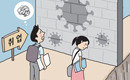
“스펙쌓을 기회조차 꽉 막힌 코로나 방학”
취준생들 한숨… 86만명 역대 최다
5차 재난금, 이르면 내달말
늦어도 추석전 지급… 방역 상황이 변수
與 “상임위장 넘기기전 입법과제 매듭”
언론중재법 단독으로라도 처리 방침 논란
[사설]
與, 법사위원장 野 넘기기 앞서 입법독주 않겠단 약속부터
기자의 눈
목표 향해 ‘피땀눈물’ 쏟는다면
모두가 K팝 아이돌
17세 탁구 신유빈
41세 많은 백전노장 눌러
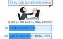
직장인 10명 중 7명
“여름휴가 대신 이직 준비”
사설
與, 법사위원장 野 넘기기 앞서 입법독주 않겠단 약속부터
Previous
정미경의 이런영어 저런미국
“언제나 말하기 전 다시 한번 생각하라”
박제균 칼럼
생계형 좌파 이익공동체를 사수하라
오늘과 내일
중국의 살계경후
by 이종석
이진구 기자의 對話
“청년들 월세 소작농 만드는 청년임대주택 보면… 화가 나”
광화문에서
코로나로 돌아보는 자아와 관계
by 손효림
횡설수설
오사카와 하치무라
by 황인찬
정미경의 이런영어 저런미국
“언제나 말하기 전 다시 한번 생각하라”
박제균 칼럼
생계형 좌파 이익공동체를 사수하라
오늘과 내일
중국의 살계경후
by 이종석
이진구 기자의 對話
“청년들 월세 소작농 만드는 청년임대주택 보면… 화가 나”
광화문에서
코로나로 돌아보는 자아와 관계
by 손효림
횡설수설
오사카와 하치무라
by 황인찬
정미경의 이런영어 저런미국
“언제나 말하기 전 다시 한번 생각하라”
박제균 칼럼
생계형 좌파 이익공동체를 사수하라
오늘과 내일
중국의 살계경후
by 이종석
Next
단독
Previous
청해부대 새 기항지 가는데 코로나19 대책 없었다
‘델타변이’ 우세종 됐다… 확진자 48%서 검출
판사 임용 방식 놓고…대법 “민변, 팩트 틀렸다” 반격
청해부대 새 기항지 가는데 코로나19 대책 없었다
‘델타변이’ 우세종 됐다… 확진자 48%서 검출
판사 임용 방식 놓고…대법 “민변, 팩트 틀렸다” 반격
청해부대 새 기항지 가는데 코로나19 대책 없었다
Next
1
/
3
1
2
3
4
미리보는 '대선' 민심
4 · 7 재보궐선거 이후
99℃ : 한국산 아이돌
‘The Original’
이동
코로나19 4차 대유행
수도권 거리두기 4단계
내달 8일까지 2주 연장
이동
고양이 눈
그늘이 필요해
이동
양종구 기자의
100세 시대 건강법
변종국 기자의
떴다떴다 변비행
대한민국 종합
4위
수영 황선우,
자유형 200m 결승 진출
김지연 이어 윤지수도
펜싱 여자 사브르 16강 안착
‘한국 럭비 사상 첫 올림픽’
“우리가 변수가 될 것”
오늘의 주요 경기
21:23
펜싱 남자 플뢰레 개인 결승
09:55
펜싱 여자 사브르 개인 32강 13
10:00
농구 여자 조별리그 A조 1차전
10:00
사격 남자 스키트 예선 -2일차
10:43
수영 남자 200m 자유형 준결승 2
11:18
유도 여자 -57kg급 32강
13:45
양궁 남자 단체 8강
15:00
수영 다이빙 남자 싱크로 10m 결승
15:50
사격 남자 스키트 결승
16:40
양궁 남자 단체 결승
18:38
유도 여자 57kg급 결승
18:40
배드민턴 남자 단식 조별리그 A조
19:09
유도 남자 73kg급 결승
19:50
역도 여자 55kg급 A조
19:54
복싱 여자 페더급(54-57kg) 16강 6
20:55
펜싱 여자 사브르 개인 결승
21:23
펜싱 남자 플뢰레 개인 결승
09:55
펜싱 여자 사브르 개인 32강 13
10:00
농구 여자 조별리그 A조 1차전
10:00
사격 남자 스키트 예선 -2일차
10:43
수영 남자 200m 자유형 준결승 2
11:18
유도 여자 -57kg급 32강
13:45
양궁 남자 단체 8강
15:00
수영 다이빙 남자 싱크로 10m 결승
15:50
사격 남자 스키트 결승
16:40
양궁 남자 단체 결승
18:38
유도 여자 57kg급 결승
18:40
배드민턴 남자 단식 조별리그 A조
19:09
유도 남자 73kg급 결승
19:50
역도 여자 55kg급 A조
19:54
복싱 여자 페더급(54-57kg) 16강 6
20:55
펜싱 여자 사브르 개인 결승
21:23
펜싱 남자 플뢰레 개인 결승
루마니아 축구협회
“MBC가 우리를 조롱했다”
韓 울상이지만…태권도, 올림픽
‘다양성 상징’으로 높이 평가
‘58세 노장’ 니샤롄 “오늘의 나는
내일보다 젊습니다, 도전하세요”
‘탁구 국가대표’ 신유빈,
BTS 뷔의 응원 받았다
‘연애도사’ 유깻잎 “전 남편
최고기, 소개팅 응원해줘”
나비, 출산 전 늘씬 몸매 공개
“맞는 옷이 없지만 괜찮아”
김홍빈 도운 러 산악인
“최소 15명이 구조 요청 외면”
정의선 협회장 ‘엄지 척’
女양궁 금메달 함께해
태권도 종주국의
‘노 골드’ 위기감
‘은퇴후 복귀’ 38세 검객
김정환, 3연속 메달
“경기 전 ‘K팝 춤’ 따라하며
나도 엄청난 열정 속으로”
도쿄올림픽 메달 수여식
악수-덕담-포옹 없이 ‘셀프’
“밤처럼 어두운 시대에
밝게 빛난 이들의 이야기”
교황 방한 기린 고인돌…
순교자 믿음으로 핀 ‘신앙의 꽃’
“장애인 척척 일할 수 있게
도와주니… 고용기피 줄었죠”
10:14
루마니아 축구협회 “한국 공영방송 MBC가 우리를 조롱했다”
10:08
이낙연 “이재명 ‘백제 발언’ 비판 상식적…사람들이 바보인가”
09:57
韓 울상이지만…태권도, 올림픽 ‘다양성 상징’으로 높이 평가
09:57
‘한국 럭비 사상 첫 올림픽 진출’ 서천오 감독 “우리가 변수가 될 것”
09:39
코로나19 신규 확진 1318명…일요일 기준 역대 최다
29STREET
동아오토
아이돌픽
트롯픽
VODA
엠엘비파크
IT동아
채널A
트롯 왕자 정동원,
트롯 4공주들과 즉석 팬미팅
“스포츠카에 더 가까워진 주행감각”… 포르쉐, SUV ‘마칸’ 부분변경 모델 공개
얼굴천재가 사는 세상
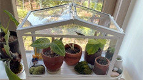
낭만 가득 그린하우스 꿈꾼다면
실용적인 ‘미니 온실'
별빛같은 나의 사랑아
“신하들 어디갔나” 허경영 수억대 외제차→궁전
어제의 동지가 오늘의 적! 데스매치에서 맞붙게 된 SSU vs UDT
도로를 달리면 전기차가 충전된다?
트롯 왕자 정동원,
트롯 4공주들과 즉석 팬미팅
“스포츠카에 더 가까워진 주행감각”… 포르쉐, SUV ‘마칸’ 부분변경 모델 공개
얼굴천재가 사는 세상
낭만 가득 그린하우스 꿈꾼다면
실용적인 ‘미니 온실'
별빛같은 나의 사랑아
“신하들 어디갔나” 허경영 수억대 외제차→궁전
어제의 동지가 오늘의 적! 데스매치에서 맞붙게 된 SSU vs UDT
도로를 달리면 전기차가 충전된다?
트롯 왕자 정동원,
트롯 4공주들과 즉석 팬미팅
“스포츠카에 더 가까워진 주행감각”… 포르쉐, SUV ‘마칸’ 부분변경 모델 공개
얼굴천재가 사는 세상
낭만 가득 그린하우스 꿈꾼다면
실용적인 ‘미니 온실'
이전
다음
Previous
부자동
재개발 기간에 살 집, 양도세 안 내려면
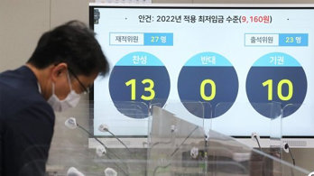
비즈N
내년 최저임금 9160원…‘적당하다’ 46% vs ‘높다’ 32%
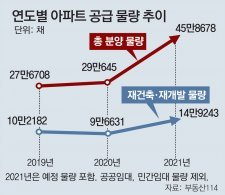
부자동
올해 분양 3채 중 1채는 재건축-재개발 물량
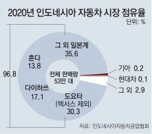
동아오토
현대차의 동남아 진격… “일본차 철옹성, 전기차로 뚫는다”
동아오토
정몽구 명예회장, ‘자동차 명예의 전당’ 한국인 최초로 헌액
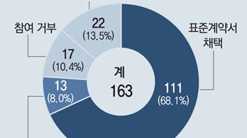
비즈N
‘갑질 계약서’에 우는 지역 배달기사들
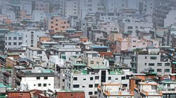
부자동
가입하고 싶어도 못하는데, 과태료 물 판… 임대보증보험을 어이할꼬
비즈N
집콕에 달라진 복날… 홈보양식 판매전
동아오토
기아, 2022년형 ‘셀토스’ 출시… 가격 1944만~2750만 원
비즈N
한국에서 집값 주가 올라도 돈 안 쓴다
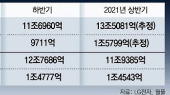
비즈N
월풀과 격차 벌린 LG전자 “연매출 1위 가자”
비즈N
‘폰속의 신분증’ 모바일 운전면허증 내년 시범운영
부자동
재개발 기간에 살 집, 양도세 안 내려면
비즈N
내년 최저임금 9160원…‘적당하다’ 46% vs ‘높다’ 32%
부자동
올해 분양 3채 중 1채는 재건축-재개발 물량
동아오토
현대차의 동남아 진격… “일본차 철옹성, 전기차로 뚫는다”
동아오토
정몽구 명예회장, ‘자동차 명예의 전당’ 한국인 최초로 헌액
비즈N
‘갑질 계약서’에 우는 지역 배달기사들
부자동
가입하고 싶어도 못하는데, 과태료 물 판… 임대보증보험을 어이할꼬
비즈N
집콕에 달라진 복날… 홈보양식 판매전
동아오토
기아, 2022년형 ‘셀토스’ 출시… 가격 1944만~2750만 원
비즈N
한국에서 집값 주가 올라도 돈 안 쓴다
비즈N
월풀과 격차 벌린 LG전자 “연매출 1위 가자”
비즈N
‘폰속의 신분증’ 모바일 운전면허증 내년 시범운영
부자동
재개발 기간에 살 집, 양도세 안 내려면
비즈N
내년 최저임금 9160원…‘적당하다’ 46% vs ‘높다’ 32%
부자동
올해 분양 3채 중 1채는 재건축-재개발 물량
동아오토
현대차의 동남아 진격… “일본차 철옹성, 전기차로 뚫는다”
동아오토
정몽구 명예회장, ‘자동차 명예의 전당’ 한국인 최초로 헌액
비즈N
‘갑질 계약서’에 우는 지역 배달기사들
Next
김진의 돌직구 쇼
동영상
기모란 경질론에…靑 “아프게 듣고 있다”
악마판사
동영상
시범재판부 해체 선전포고한 안내상, 진영을 향한 절실한 부탁 | tvN 210725 방송
옥탑방의 문제아들
동영상
잘났어~ 정말! 두 방송사에서 동시에 대상 수상을 한 대상여신 고두심 | KBS 210629 방송
DRAMA Voyage(봐야지)
동영상
＂넌 머리 묶는게 더 잘 어울려＂ 애써 멀어진 한소희에게 다시 훅 다가오는 송강｜알고있지만,｜JTBC 210717 방송
동영상
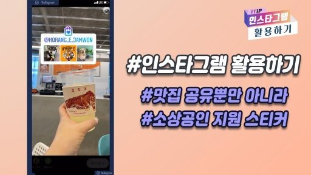
많이 본
댓글이 핫한
베스트추천
1
‘女중사 사망사건’ 2차 가해 부사관 수감 중 사망
2
김어준, 김경수 재판부에 “개놈××들” 원색 비난 논란
3
다 바꾼 김학범호, 탈락 위기서 가장 유리한 고지로
4
2030 직장인, 휴가내 집보러 다녀도… ‘매물 없음’
5
[박제균 칼럼]생계형 좌파 이익공동체를 사수하라
6
‘선발전 2500발’ 오직 실력만 보고 뽑은 양궁 국대, 33년 세계최강
7
윤석열, 김종인계 영입… 尹만난 이준석 “불확실성 절반 제거”
8
17세 탁구 신유빈, 41세 많은 백전노장 눌러
9
“대형 태풍 27일 도쿄 관통”… 엎친데 덮친 올림픽
10
[단독]판사 임용 방식 놓고…대법 “민변, 팩트 틀렸다” 반격
1
김어준, 김경수 재판부에 “개놈××들” 원색 비난 논란
2
“한명숙 자서전 해명은 수뢰 정황 더 확실히 할 뿐”
3
尹 지지율 하락에 野 내분… “꽃가마는 없다” vs “쓸데없는 압박”
4
조국 딸 친구 “세미나 당일 조민 본 기억 없어”
5
이준석 “11월 말하는 분들 솔직해져야…아름다운 단일화는 없어”
6
“조그마한 댓글 조작” 김경수 옹호 이어가는 與
7
이준석·윤석열 오늘 다시 만난다…입당 시기 논의하나?
8
이재명 ‘백제 발언’에…정세균 “일베인가? 역대 최악”
9
MBC 올림픽 무례 자막, 처음 아니다…2008년에도 중징계
10
조국 “딸 친구 수사기록에 3시간반 공백”…의문 제기
1
[박제균 칼럼]생계형 좌파 이익공동체를 사수하라
2
“한명숙 자서전 해명은 수뢰 정황 더 확실히 할 뿐”
3
경실련 김헌동 “윤석열, 부동산 이권 카르텔 간파했더라”
4
윤석열 “여론 조작 지시 문 대통령 책임 물어야”…특검 재개 요구
5
이준석 “11월 말하는 분들 솔직해져야…아름다운 단일화는 없어”
6
원희룡 대선 출마 선언 “文정부 모든 것 되돌려 놓겠다”
7
‘선발전 2500발’ 오직 실력만 보고 뽑은 양궁 국대, 33년 세계최강
8
김어준, 김경수 재판부에 “개놈××들” 원색 비난 논란
9
안철수 “文 사과한마디 없이 뻔뻔…‘드루킹’ 어디까지 알았습니까?”
10
윤석열의 ‘국민 캠프’…野 전직 의원 5명 합류
주간동아
한국투자증권 “부실 펀드 선제적 보상”… ESG 채권 흥행몰이
신동아
윤석열 만난 신평 “尹, 입당 할지 말지 고민 많더라”
여성동아
김서형의 카리스마는 어떻게 만들어졌나
매거진동아
“아직 고점 아닙니다, 집값 더욱 격렬하게 오를 겁니다”
알립니다
전합니다
인사
부고
SNS
페이스북
트위터
유튜브
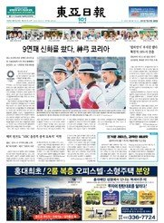
오늘의 1면 톱뉴스
9연패 신화를 쐈다, 神弓 코리아
주식시세
오늘의 운세
일일 외국어 산책
영어
|
중국어
|
일본어
동아미디어그룹
DAMG소개
|
'동네'블로그
2021 동아일보 신춘문예
펼치기/닫기
2021 동아일보 신춘문예
동아국악콩쿠르
동아음악콩쿠르
LG와 함께 하는 제15회 서울국제음악콩쿠르
동아무용콩쿠르
세계 보도 사진전
제주 국제사진공모전
동아 Family
펼치기/닫기
동아 Family
인촌기념회
일민미술관
신문박물관
화정 평화재단
사이버견학
문화·스포츠사업
동아마라톤
서귀포 동아마라톤 센터
동아신춘문예
동아 채용사이트
동아 꿈나무재단
동아연극상
서울국제음악콩쿠르
동아축쇄판
동아사진살롱
동아E&D
동아PDS
비즈N
동아오토
동아부동산
헬스
트래블
반려동물
스포츠동아
MLB파크
보스
VODA
29ST
아이돌픽
IT동아
매거진
신동아
주간동아
여성동아
매거진동아
동아비즈니스리뷰
하버드비즈니스
리뷰코리아
어린이동아
과학동아
어린이 과학동아
수학동아
에듀동아
동아신춘문예
동아방송 DBS
다국어뉴스
영어
중국어
일본어
신문보기
보이스뉴스
|
RSS
SNS에서도 동아일보의 기사를 보실 수 있습니다.
페이스북
트위터
닫기